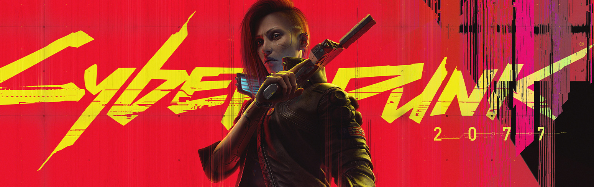

Johnny Silverhand's Monologue
TikTok by Joey_Yosef
>Okay,
>I'll tell you why I want to destroy Arasaka,
>But I'll only tell you once.
>Wanna hear it?
>I saw corps strip farmers of water ... and eventually of land.
>Saw them transform Night City into a machine fueled by people's crushed spirits, broken dreams, and emptied pockets.
>Corps have long controlled our lives, taken lots... and now they're after our souls!
>V, I've declared war not because capitalism is a thorn in my side or outta nostalgia for an America gone by.
>This war's a people's war against a system that's spiralled outta our control.
>It's a war against the fuckin' forces of entropy, understand?
>Do whatever it takes to stop 'em, defeat 'em, gut 'em. If I gotta kill, I'll kill.
>If I need your body, I'll fuckin' take it!
>Fuckin' hell ... You still don't see it.
>But you will one day.
